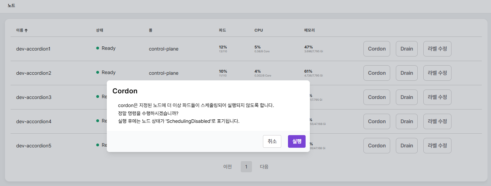
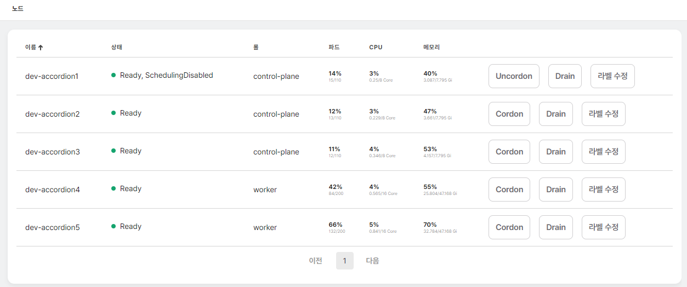

노드
클러스터는 한개 이상의 노드로 구성되며 노드는 물리적 또는 가상 머신을 의미한다. 쿠버네티스는 파드를 노드에서 실행한다. 각 노드는 컨트롤 플레인에 의해 관리되며 파드 실행에 필요한 서비스를 포함한다. 노드는 역할에 따라 마스터(또는 컨트롤 플레인) 노드와 워커 노드로 구분된다.

노드 메뉴에서 제공하는 정보는 다음과 같다.
| 항목 | 설명 |
|---|---|
이름 |
노드 이름 |
상태 |
노드 상태 (정상일 경우 |
롤 |
노드 역할 ( |
파드 |
노드에 배포된 파드 현황 및 파드 상세 목록 |
CPU |
노드에서 사용중인 CPU 현황 |
메모리 |
노드에서 사용중인 메모리 현황 |
노드 이벤트 |
최근 1시간 이내에 노드에 발생한 이벤트 목록 |
보다 상세한 정보를 원하는 경우 해당 노드를 선택하면 상세 정보 페이지를 확인할 수 있다.

노드 메뉴(또는 노드 상세 화면)에서는 각 노드에 대해 Cordon, Drain 명령이 가능하고 노드의 레이블을
변경할 수 있다.
| 문서에서는 노드 메뉴에서 설정하는 방법을 기준으로 가이드한다. |
Cordon
Cordon 버튼을 이용해 해당 노드를 쿠버네티스 리소스 배포 대상에서 제외하여 파드가 배포되지 않도록 설정할
수 있다. 이 경우 노드 상태에 SchedulingDisabled 가 추가된다.

Cordon 으로 쿠버네티스 리소스 배포 대상에서 제외된 노드는 Uncordon 버튼을 이용해 다시 쿠버네티스 리소스
배포 대상으로 추가할 수 있다. 쿠버네티스 리소스 배포 대상으로 추가되면 SchedulingDisabled 롤이 제거된다.
